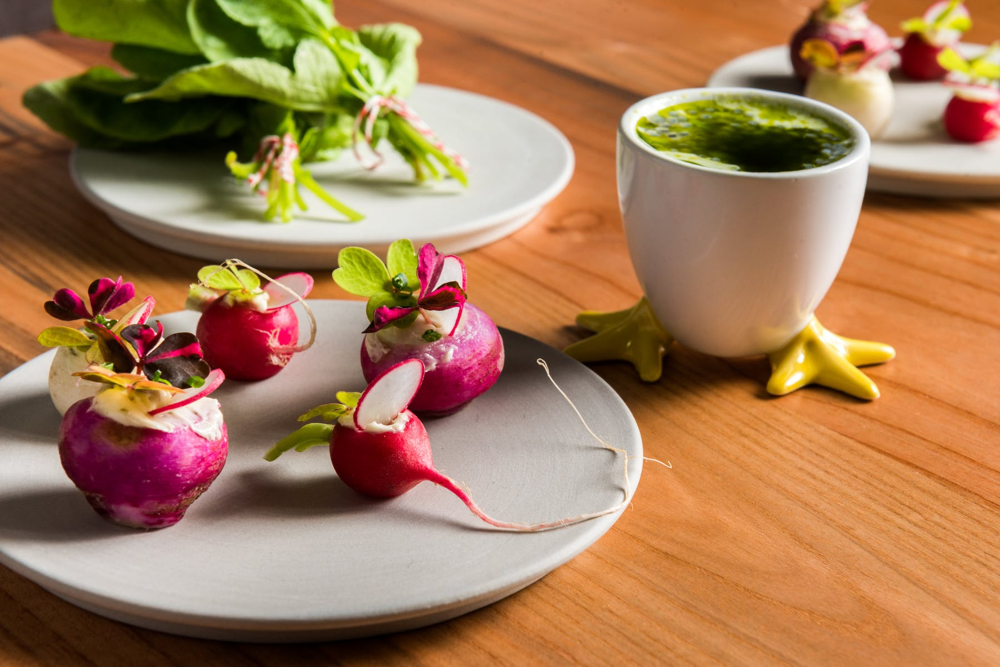
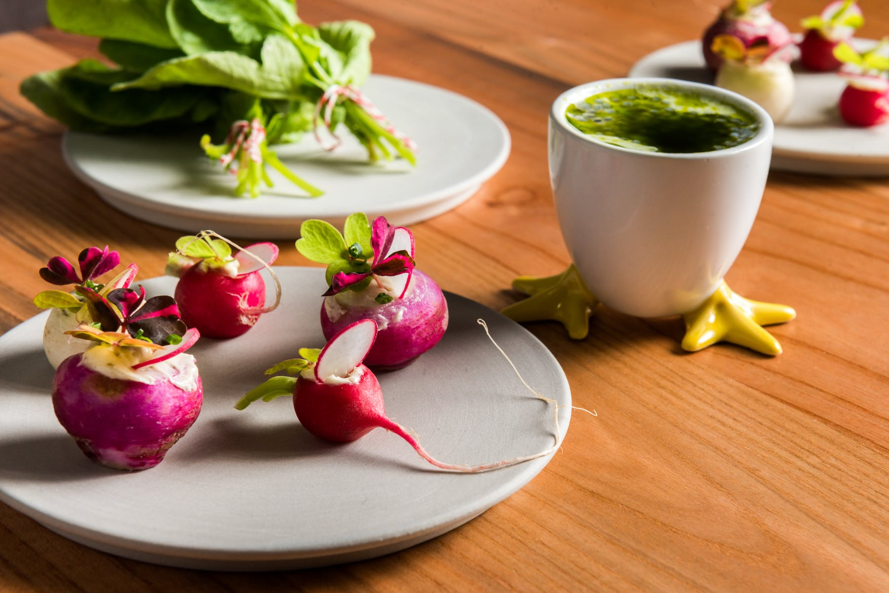
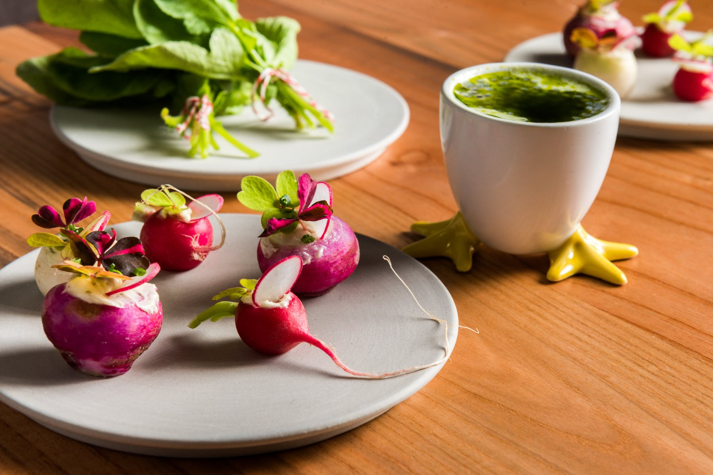
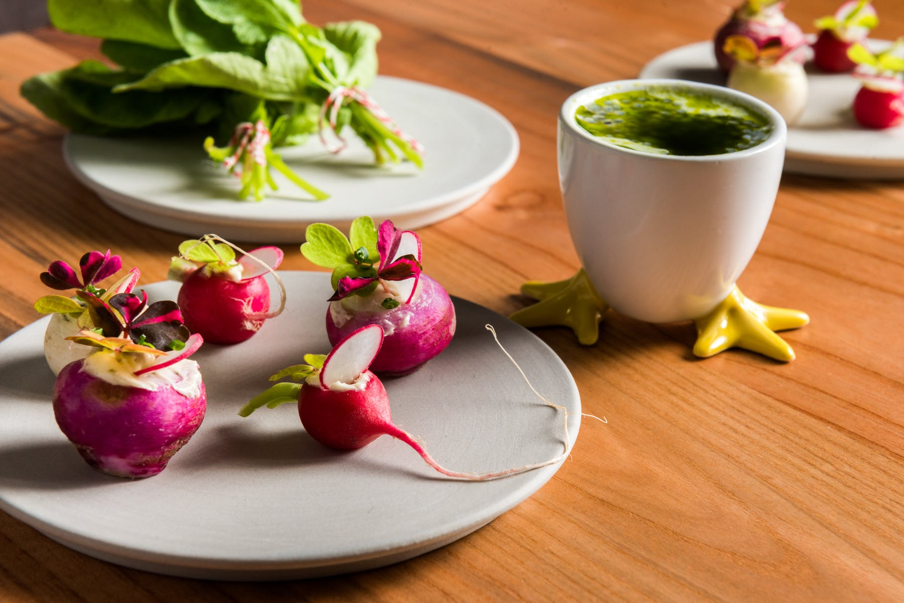

Labor Day Cookout Kit $105 serves 2-4 For The Grill 12 Smoked Baby Back Ribs bbq sauce 2 Burger Patties - (6 oz each) sliced onion, heirloom tomato, aged cheddar, garlic aioli, b&b pickles, house buns 2 House Smoked Hot Dogs - (4 oz each) house made hot dog buns, pickled peppers, mustard aioli, sweet relish Sides Mac & Cheese Tray Baked Beans Mini Cornbread Loaves whipped honey butter Greens Salad toasted sunflower seeds, grilled peach, cherry tomatoes, red wine vinaigrette Dessert Berries & Cream shortcake - vanilla pudding - mascarpone


 

 
